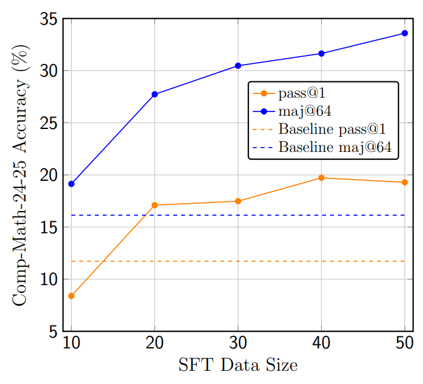
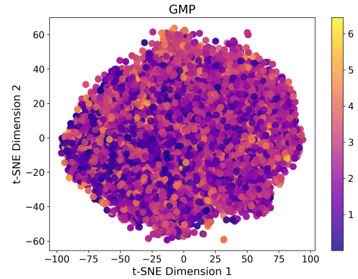
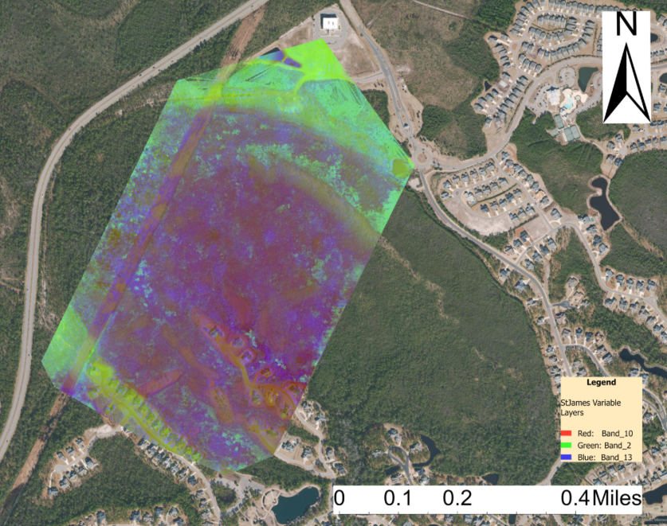
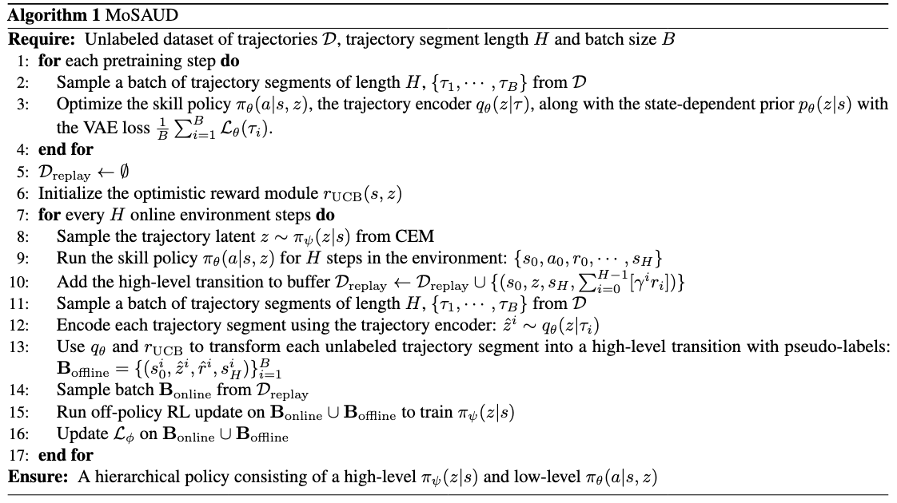
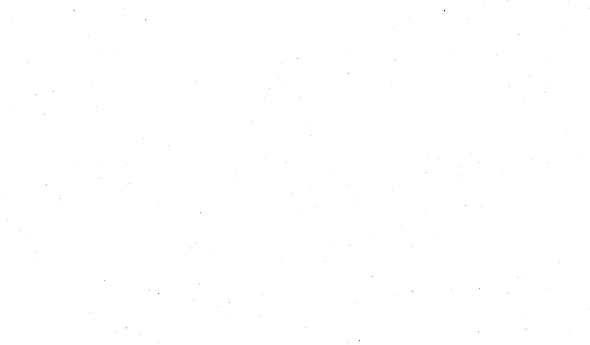

about
Hi! I'm a third year Computer Science undergraduate student at Georgia Tech, where I've been fortunate to work with Prof. Pan Li and Prof. Animesh Garg. My recent works spans robotics (learning from unlabeled videos) and ML for science (currently particle physics).
I will be applying for PhDs for Fall 2027. My research goal is to create sample-efficient models grounded in real-world dynamics. I've recently become interested in robotics, and I have a few work-in-progress projects in this domain.
Outside of research, I love staying active and playing sports. I boulder and lift a lot, and occasionally play pickup ultimate frisbee and volleyball. I also listen to a lot of music (mostly techno) and DJ. Sometimes I also urbex.
Accepting opp applications.
research

Locality-Sensitive Hashing-Based Efficient Point Transformer for Charged Particle Reconstruction
Machine Learning and the Physical Sciences Workshop, NeurIPS 2025
Unified evaluation of HEPT and GNN baselines, and HEPTv2: a lightweight decoder that removes clustering and enables fast end-to-end inference for charged particle tracking.

Is Human-Written Data Enough? The Challenge of Teaching Reasoning to LLMs Without RL or Distillation
AI for Math Workshop, ICML 2025
Developed strong reasoning capabilities in base models without reinforcement learning via high-quality CoT.

Pre-training graph neural networks with structural fingerprints for materials discovery
arXiv, 2025 [In Submission: Machine Learning Science and Technology]
Pre-training GNNs for materials science using cheaply-computed structural fingerprints.

Remote Sensing, 2022
Developed a novel approach combining hyperspatial LiDAR and multispectral imaging data with gradient boosting methods to accurately identify and classify coastal wetlands.
projects

Efficient Skill-based Reinforcement Learning
Course Project CS 8803 DRL
A model-based RL framework that extracts reusable skills from rewardless offline data and reuses the data by relabeling with an optimistic reward estimator for efficient exploration through the learned dynamics model.

Winner-Take-All Sparse Autoencoders
Course Project CS 7461 DL
A winner-take-all sparsity mechanism for sparse autoencoders in the context of mechanistic interpretability. Investigates feature-wise sparsity constraints for SAEs to prevent dead features.